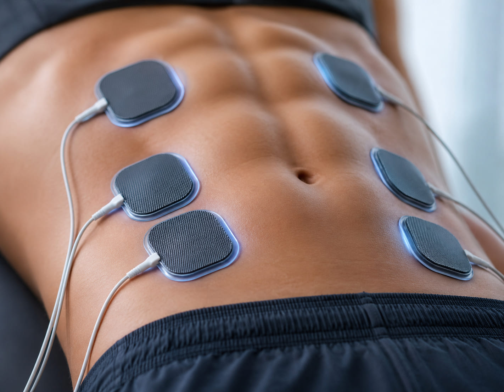

Body Contouring · Muscle ToningContorno Corporal · Tonificación Muscular
Sculpt & Strengthen
Without the Sweat.
Esculpe y Fortalece
Sin Sudar.
Body Tone uses bio-electric energy pulses to tone, strengthen, and sculpt your muscles — generating approximately 20,000 muscle contractions in just 30 minutes. Build definition without a single rep. Body Tone utiliza pulsos de energía bioeléctrica para tonificar, fortalecer y esculpir tus músculos — generando aproximadamente 20,000 contracciones musculares en solo 30 minutos. Construye definición sin una sola repetición.

What is Body Tone & how does it work?¿Qué es Body Tone y cómo funciona?
Your muscles,
pushed further.
Tus músculos,
llevados más lejos.
The Body Tone treatment uses bio-electric energy pulses to tone up and strengthen muscles. This treatment prevents muscle atrophy by exercising different muscle groups. The Bodytone machine re-educates the muscles, toning and shaping weak muscles and rebuilding mass. El tratamiento Body Tone utiliza pulsos de energía bioeléctrica para tonificar y fortalecer los músculos. Este tratamiento previene la atrofia muscular al ejercitar diferentes grupos musculares. La máquina Bodytone reeducar los músculos, tonificando y dando forma a los músculos débiles y reconstruyendo la masa muscular.
The bio-electric energy pulses eliminate unwanted fat by simulating a heavy workout — twisting, flexing, and contracting specific muscle groups — dramatically changing the size, shape, and tone of the patient's muscle. Most patients experience up to a 30% increase in muscle development. Los pulsos de energía bioeléctrica eliminan la grasa no deseada al simular un entrenamiento intenso — torciendo, flexionando y contrayendo grupos musculares específicos — cambiando dramáticamente el tamaño, la forma y el tono del músculo del paciente. La mayoría de los pacientes experimenta hasta un 30% de aumento en el desarrollo muscular.
Book a consultationAgenda una consulta →What is the procedure like?¿Cómo es el procedimiento?
Three phases.
One powerful session.
Tres fases.
Una sesión poderosa.
Warm-UpCalentamiento
Similar to a pre-workout routine, a low-intensity warm-up gets your muscles ready to respond. The Bodytone device begins sending gentle bio-electric pulses to prepare the targeted muscle groups. Similar a una rutina pre-entrenamiento, un calentamiento de baja intensidad prepara tus músculos para responder. El dispositivo Bodytone comienza a enviar pulsos bioeléctricos suaves para preparar los grupos musculares objetivo.
Muscle ToningTonificación Muscular
A medium-intensity phase improves muscle definition and shape. The pulses increase in intensity to prepare the muscles for the final workout phase. Una fase de intensidad media mejora la definición y la forma muscular. Los pulsos aumentan en intensidad para preparar los músculos para la fase final de entrenamiento.
WorkoutEntrenamiento
The high-intensity phase concentrates on breaking down unwanted fat while building muscle. Approximately 20,000 contractions are delivered in this single session. La fase de alta intensidad se concentra en descomponer la grasa no deseada mientras construye músculo. Aproximadamente 20,000 contracciones se entregan en esta única sesión.
Who is an ideal candidate?¿Quién es la candidata ideal?
Is Body Tone
right for you?
¿Es Body Tone
para ti?
A note from our teamUna nota de nuestro equipo
Consultation is an important and essential part of the treatment process. Our medical providers will evaluate your unique body goals and determine whether Body Tone is the right treatment for you — and design a personalized session plan to match. La consulta es una parte importante y esencial del proceso de tratamiento. Nuestros proveedores médicos evaluarán tus objetivos corporales únicos y determinarán si Body Tone es el tratamiento adecuado para ti — y diseñarán un plan de sesiones personalizado para adaptarse.
Book a consultationAgenda una consulta →Benefits of Body ToneBeneficios de Body Tone
What Body Tone
does for you.
Lo que Body Tone
hace por ti.
What kind of results can you expect?¿Qué tipo de resultados puedes esperar?
Stronger. More Defined.
No Gym Required.
Más Fuerte. Más Definida.
Sin Gimnasio.
Bodytone generates approximately 20,000 muscle contractions in a 30-minute session — equivalent to an intense workout. Treatment creates stronger, tighter core muscles and well-defined muscles while eliminating unwanted fat. Results progress with each session. Bodytone genera aproximadamente 20,000 contracciones musculares en una sesión de 30 minutos — equivalente a un entrenamiento intenso. El tratamiento crea músculos centrales más fuertes y tensos y músculos bien definidos mientras elimina la grasa no deseada. Los resultados progresan con cada sesión.
Book a consultationAgenda una consulta →What clients sayQué dicen nuestras clientas
400+ five-star reviews.400+ reseñas de cinco estrellas.
Why choose Olam Med SpaPor qué elegir Olam Med Spa
Expert care. Every time. Atención experta. Siempre.
20,000 Contractions Per Session20,000 Contracciones por Sesión
Bodytone generates 20,000 muscle contractions in 30 minutes — a level of muscle activation impossible to achieve through conventional exercise alone.Bodytone genera 20,000 contracciones musculares en 30 minutos — un nivel de activación muscular imposible de lograr solo a través del ejercicio convencional.
Fully Customizable TreatmentTratamiento Completamente Personalizable
Our providers customize the bio-electric pulse intensity and target zones to match your specific goals — whether toning the abdomen, strengthening the glutes, or sculpting the arms.Nuestros proveedores personalizan la intensidad del pulso bioeléctrico y las zonas objetivo para adaptarse a tus metas específicas — ya sea tonificar el abdomen, fortalecer los glúteos o esculpir los brazos.
Zero Downtime, Real ResultsSin Recuperación, Resultados Reales
Walk in, walk out. Body Tone requires no recovery time. Sessions are comfortable and you can resume all normal activities immediately after treatment.Entra, sal. Body Tone no requiere tiempo de recuperación. Las sesiones son cómodas y puedes reanudar todas las actividades normales inmediatamente después del tratamiento.
Ready to build your best body?¿Lista para construir tu mejor cuerpo?
Book your Body Tone consultation at Olam Med Spa in Pembroke Pines today.Agenda tu consulta de Body Tone en Olam Med Spa en Pembroke Pines hoy.